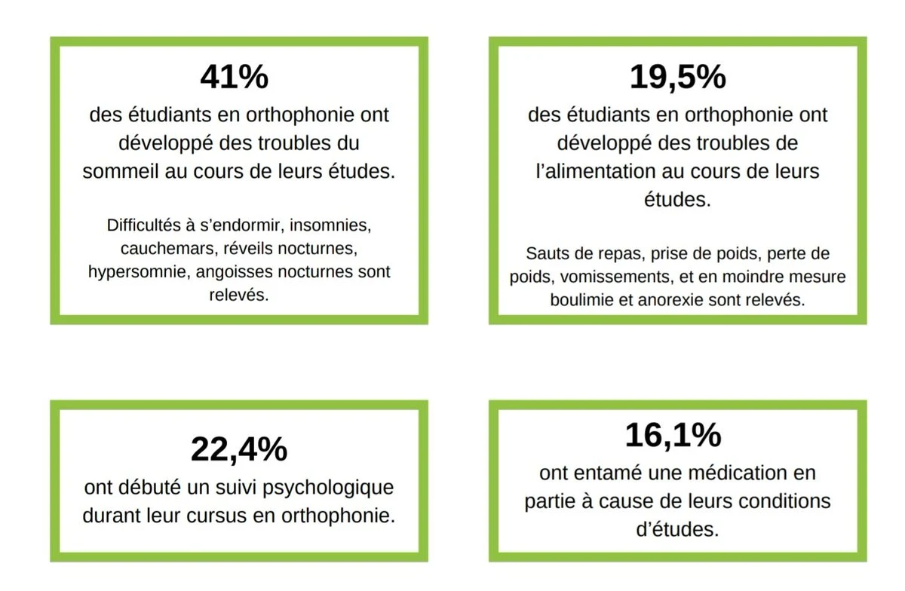

Publication sur X
Orthophonie. Notre solidarité avec les étudiantes et étudiants
Date de publication sur X · 18 février 2022
Repères éditoriaux
Nous avons relayé l’enquête de la FNEO sur les conditions d’études en orthophonie. Le visuel présente des résultats déclarés par les personnes ayant répondu à l’enquête.
Texte de la publication sur X
Solidaire des étudiants en orthophonie qui subissent des conditions d'études violentes. Le rapport de @La_FNEO détaille leurs conditions d'études:
https://t.co/MRRMBqDWF2 https://t.co/49PJl0ey7g

Sources
PCF 79 · @79Parti sur X · AR-0005-TW-1494702499512598531
À lire aussi · Le 13 janvier à Niort, le personnel de l’Éducation nationale en grève